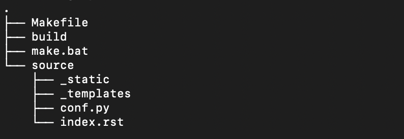
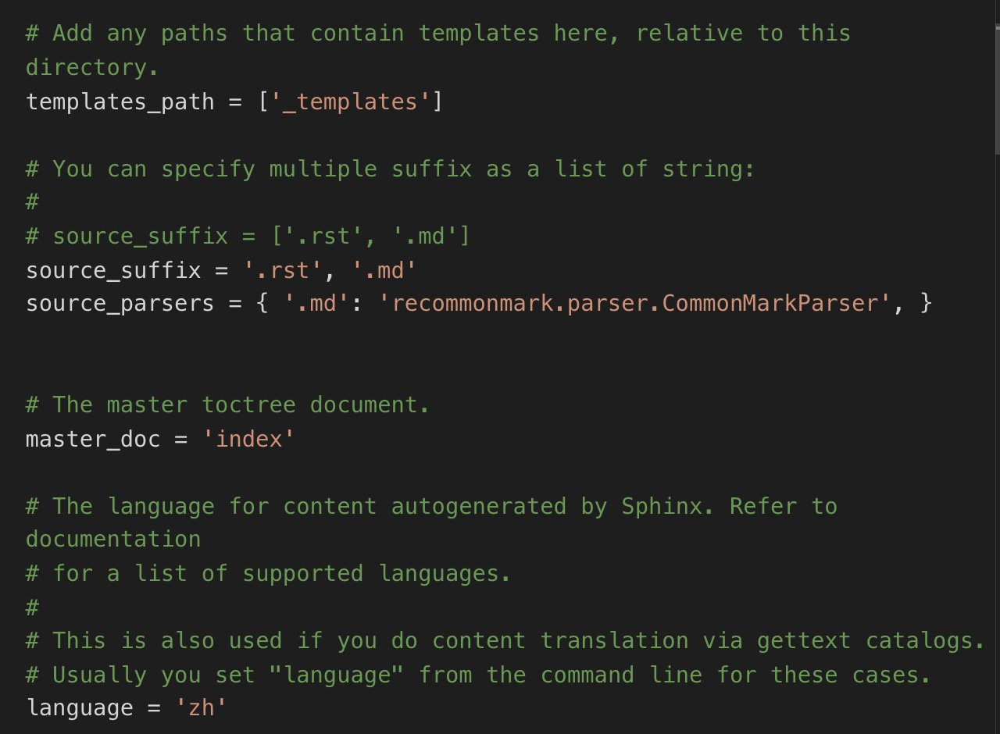

Sphinx 项目元素¶
新建 Sphinx 项目之后，本节将介绍 Sphinx 项目的元素及作用。
项目构成¶
如下图所示，一个 Sphinx 项目一般由一个资源文件夹和一个构建文件夹。

source 文件夹是 Sphinx 项目的资源文件夹，简单来说，就是用来存放我们需要编辑的所有文件的。build 文件夹是执行构建命令之后的目标文件夹，新建项目之后这个文件夹还是空的，之后执行 make 操作之后，构建出的内容会存放在这个文件夹中。Makefile和make.bat是构建项目时需要的文件，我们不需要对这两个文件进行任何操作。提示：为了便于理解，我们用默认的 source 和 build 文件夹做演示，在实际操作中，也可以将这两个文件夹重命名或将资源和构建文件夹分开存放。
conf.py 配置文件¶
在这个文件中，你可以找到所有跟项目配置相关的信息，之前通过sphinx-quickstart创建项目时进行的配置，都可以在这里修改。
- 项目基本信息：项目名，版权，作者，版本号
- 通用配置：项目的拓展工具，源文件后缀，项目主文件，项目语言等信息
- HTML 等指定格式输出配置
Sphinx 项目默认配置的源文件后缀为.rst，即支持 reStructured Text 作为项目写作语言，要添加 Markdown 作为写作语言，需要：
- 将
.md后缀添加到源文件后缀中，即source_suffix = '.rst', '.md'，或直接复制方括号内的内容进行替换 - Sphinx 项目通过 recommonmark 支持 Markdown，添加下面内容
source_parsers = { '.md': 'recommonmark.parser.CommonMarkParser', }配置完成后应如下图所示 
index.rst 目录文件¶
Sphinx 项目通过 index.rst 文件自动生成目录。你可以将这个文件夹当作整个项目的入口文件，所有的文档都通过这个文件组织连接起来。